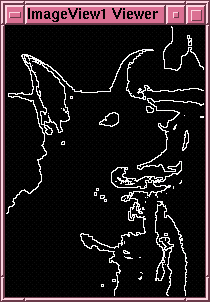

An example using this unit is:
This network is a Binary Edge Detector. It detects prominent 'edges' ie. intensity changes in an image. It then uses ToGreyScale to general a grey scale image and then uses Threshold to generate a black and white image where all pixels of intensity higher than the defined value are white and all others are black. It takes two copies of this image, one of which has the white areas 'shrunk'. ImageDiff is used to find the differences between the two images. Typical results are:
 |
 |
| Before operation | After operation |